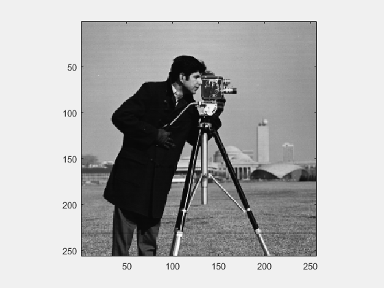
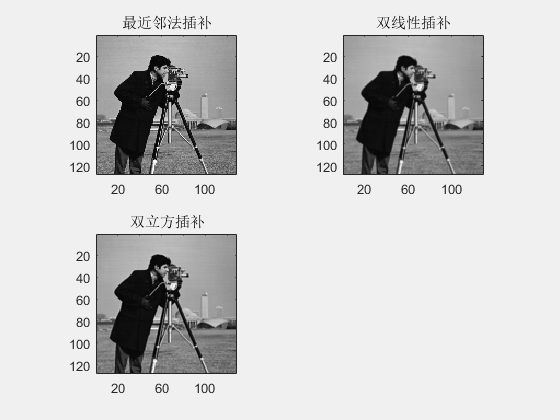
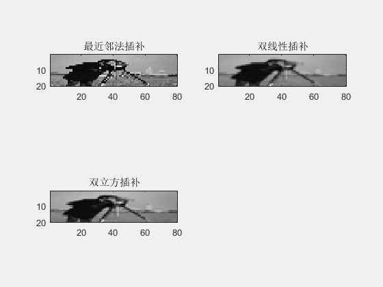

Contents
function test51
1.将索引图像'wmandril.mat'调整大小
(1) 增大3倍；
(2) 减小2倍；
(3) 调整大小为[20 80]。
注意：1. X,X1为整数，程序中不必多加取整操作。
2. floor(X2)为对X2取整操作，因为subimage()中的数据必须为整数才能显示
X2,X3经过插补后带有小数，所以要加取整操作。
3. imshow()可以显示小数的数据。
初始化
clc; % 清除命令窗口 clf; % 清除图形窗口 clear % 清除工作区 % 加载图像 % load wmandril.mat X=imread('cameraman.tif'); %figureEx(1,'原始图像',[0,0,1,1]) subimage(X);
(1) 增大3倍
%figureEx(2,'增大3倍',[0.3,0,1,1]) figure(2) % 方法一: 最近邻法插补(nearest) % 说明: 输出像素点的赋值为当前点的像素点 X1=imresize(X,3,'nearest'); subplot(2,2,1) subimage(X1); title('最近邻法插补'); % 方法二: 双线性插补(bilinear) % 说明 : 输出像素点的赋值为2x2矩阵所包含的有效点的加权平均值 X2=imresize(X,3,'bilinear'); subplot(2,2,2) subimage(X2); title('双线性插补'); % 方法三: 双立方插补(bicubic) % 说明 : 输出像素点的赋值为4x4矩阵所包含的有效点的加权平均值 X3=imresize(X,3,'bicubic'); subplot(2,2,3) subimage(floor(X3)); title('双立方插补');
(2) 减小2倍
%figureEx(3,'减小2倍',[0.5,0,1,1]) figure(3) % 方法一: 最近邻法插补(nearest) % 说明: 输出像素点的赋值为当前点的像素点 X1=imresize(X,0.5,'nearest'); subplot(2,2,1) subimage(X1); title('最近邻法插补'); % 方法二: 双线性插补(bilinear) % 说明 : 输出像素点的赋值为2x2矩阵所包含的有效点的加权平均值 X2=imresize(X,0.5,'bilinear'); subplot(2,2,2) subimage(floor(X2)); title('双线性插补'); % 方法三: 双立方插补(bicubic) % 说明 : 输出像素点的赋值为4x4矩阵所包含的有效点的加权平均值 X3=imresize(X,0.5,'bicubic'); subplot(2,2,3) subimage(floor(X3)); title('双立方插补');
(3) 调整大小为[20 80]
figureEx(4,'调整大小为[20 80]',[0.7,0,0.3,0.8])
figure(4) % 方法一: 最近邻法插补(nearest) % 说明: 输出像素点的赋值为当前点的像素点 X1=imresize(X,[20 80],'nearest'); subplot(2,2,1) subimage(X1); title('最近邻法插补'); % 方法二: 双线性插补(bilinear) % 说明 : 输出像素点的赋值为2x2矩阵所包含的有效点的加权平均值 X2=imresize(X,[20 80],'bilinear'); subplot(2,2,2) subimage(floor(X2)); title('双线性插补'); % 方法三: 双立方插补(bicubic) % 说明 : 输出像素点的赋值为4x4矩阵所包含的有效点的加权平均值 X3=imresize(X,[20 80],'bicubic'); subplot(2,2,3) subimage(floor(X3)); title('双立方插补');